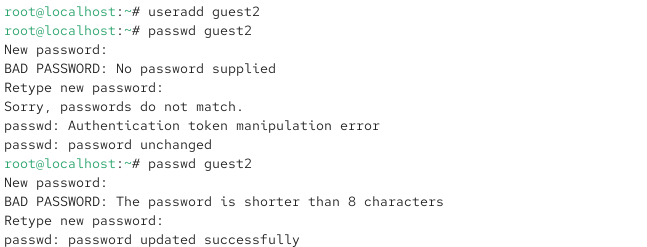
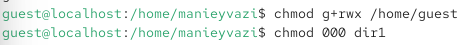

6.октябрь.2026
Отчёт по лабораторной работе № 3
Получение практических навыков работы в консоли с атрибутами файлов для групп пользователей.
Действие: Создать учётную запись guest и задать пароль (от имени администратора).
useradd guest passwd guest
Результат: Пользователь guest создан, пароль установлен.
Действие: Создать вторую учётную запись guest2 и задать пароль.

Рис. 2 — Пользователь guest2 создан, пароль установлен.
Действие: Добавить пользователя guest2 в группу guest.
Рис. 3 — Adding user guest2 to group guest
Действие: Открыть две консоли (или два терминала) и войти: В первой консоли — как guest. Во второй консоли — как guest2.

Рис. 4 — Оба пользователя авторизованы в своих сессиях.
Действие: Для обоих пользователей определить текущую директорию и сравнить с приглашением.
Команды (в обеих консолях):
Рис. 4 — Приглашения командной строки соответствуют именам пользователей.
Действие: Уточнить имя пользователя, его группу и членство в группах.
Команды (в консоли guest): Команды (в консоли guest2):
Рис. 4
Действие: Сравнить полученную информацию с содержимым файла /etc/group.

Рис. 5 - ()
Действие: От имени guest2 выполнить регистрацию в группе guest.
Команда (в консоли guest2):
Рис. 4 — Текущая группа изменена на guest. Приглашение может измениться. Теперь guest2 активно использует группу guest.
Действие: От имени guest разрешить все действия для пользователей группы.
Команда (в консоли guest):

Рис. 6 — Теперь группа guest имеет права rwx на домашнюю директорию guest.
Действие: Меняя атрибуты у директории dir1 и файла file1 от имени guest, проверять операции от имени guest2. Заполнить таблицу.

Рис. 7 — ()
В консоли guest установить права:
chmod <права_директории> dir1 chmod <права_файла> dir1/file1
2.В консоли guest2 попробовать выполнить операцию и записать + или -. Операции для тестирования (от имени guest2):
| Операция | Команда |
|---|---|
| Создание файла | echo “test” > /home/guest/dir1/newfile |
| Удаление файла | rm /home/guest/dir1/file1 |
| Переименование файла | mv /home/guest/dir1/file1 /home/guest/dir1/file2 |
| Просмотр файлов | ls /home/guest/dir1 |
| Смена директории | cd /home/guest/dir1 |
| Чтение файла | cat /home/guest/dir1/file1 |
| Запись в файл | echo “data” >> /home/guest/dir1/file1 |
Таблица 3.1 (пример заполнения):

Сравнение с таблицей 2.1 (лабораторная № 2):
В таблице 2.1 права проверялись для владельца (первые три бита).
В таблице 3.1 права проверяются для группы (вторые три бита).
Результаты аналогичны: для группы действуют те же правила, что и для владельца, но применяются ко вторым трём битам прав.
| Операция | Минимальные права директории (для группы) | Минимальные права файла (для группы) |
|---|---|---|
| Создание файла | -wx (030) | — (000) |
| Удаление файла | -wx (030) | — (000) |
| Переименование файла | -wx (030) | — (000) |
| Просмотр файлов | r-x (050) | — (000) |
| Смена директории | –x (010) | — (000) |
| Чтение файла | –x (010) | r– (040) |
| Запись в файл | –x (010) | -w- (020) |
В таблице 3.2 указаны права для группы (вторые три бита), так как проверка ведётся от имени guest2, входящего в группу guest.
В ходе лабораторной работы я: Создал учётные записи guest и guest2. Добавил guest2 в группу guest с помощью gpasswd. Вошёл в систему от двух пользователей на двух консолях. Определил директории, имена пользователей и группы с помощью pwd, whoami, id, groups. Сравнил информацию с содержимым /etc/group. Зарегистрировал guest2 в группе guest командой newgrp. Изменил права директории /home/guest, разрешив все действия для группы. Снял атрибуты с /home/guest/dir1. Заполнил таблицы 3.1 и 3.2, сравнив с таблицей 2.1 из лабораторной № 2. Подтвердил, что для группы действуют те же правила доступа, что и для владельца, но применяются ко вторым трём битам прав.
□ Титульный лист
□ Цель работы
□ Описание процесса выполнения с командами и снимками экрана
□ Таблица 3.1 — «Установленные права и разрешённые действия для группы»
□ Таблица 3.2 — «Минимально необходимые права для группы»
□ Выводы, согласованные с целью работы
получены практические навыки работы с атрибутами файлов для групп пользователей.